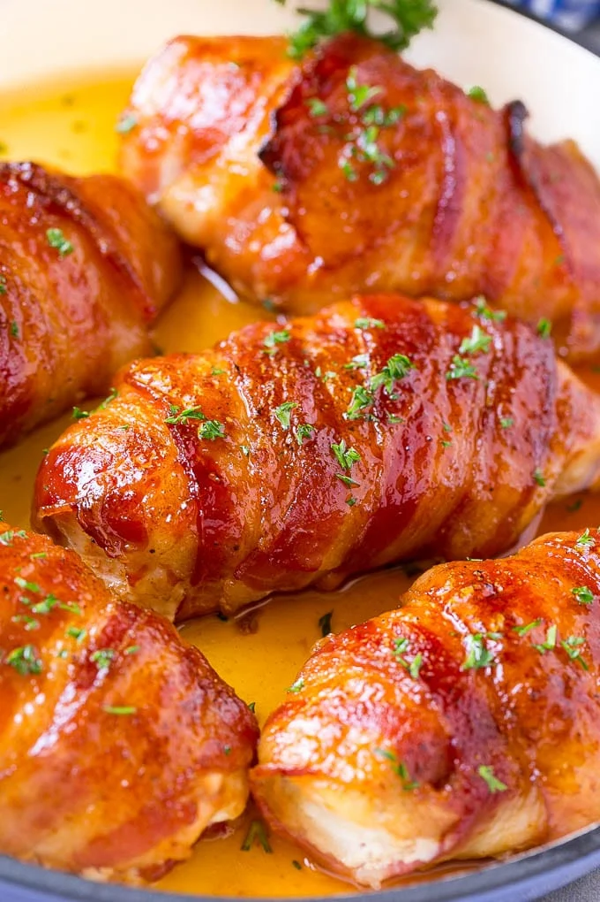

Bacon Wrapped Chicken

Tender, juicy chicken breast seasoned with a smokey, sweet rub and wrapped with crispy bacon
Ingredients
- 4 boneless, skinless chicken breasts
- 8 slices of bacon
- 1/4 cup brown sugar
- 2 tsp smoked paprika
- 1/2 tsp garlic powder
- 1/4 tsp onion powder
- 1/2 tsp black pepper
- 1/2 tsp salt
- 1 TBSP fresh, chopped parsley
Steps
- Preheat oven to 375 degrees F
- Mix together brown sugar and all spices
- Using half of the spice mixture, roll each chicken breast in mixture
- Wrap each spice covered chicken breast with two slices of bacon
- Roll each wrapped breast in the remaining spice mixture and place seam side down on baking shieet
- Bake for 25 to 30 minutes
- Sprinkle with Parsley
- Serve and Enjoy!
photo and recipe credit to: Dinner at the Zoo